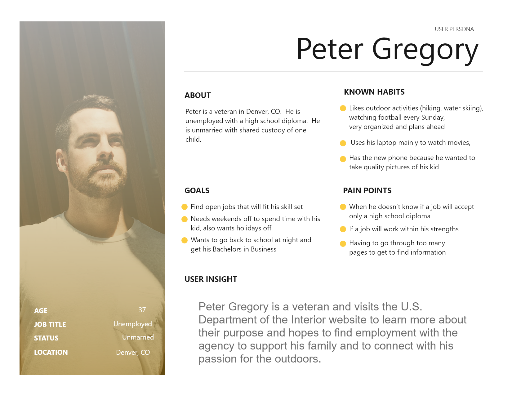
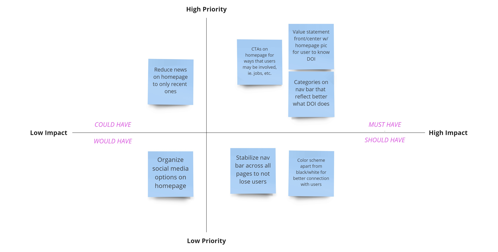
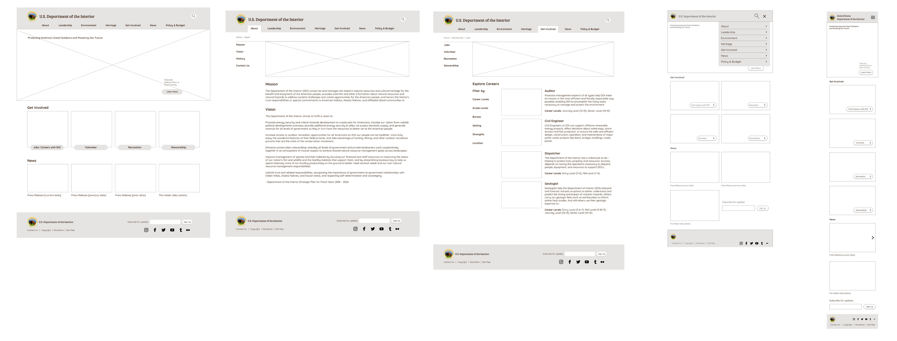
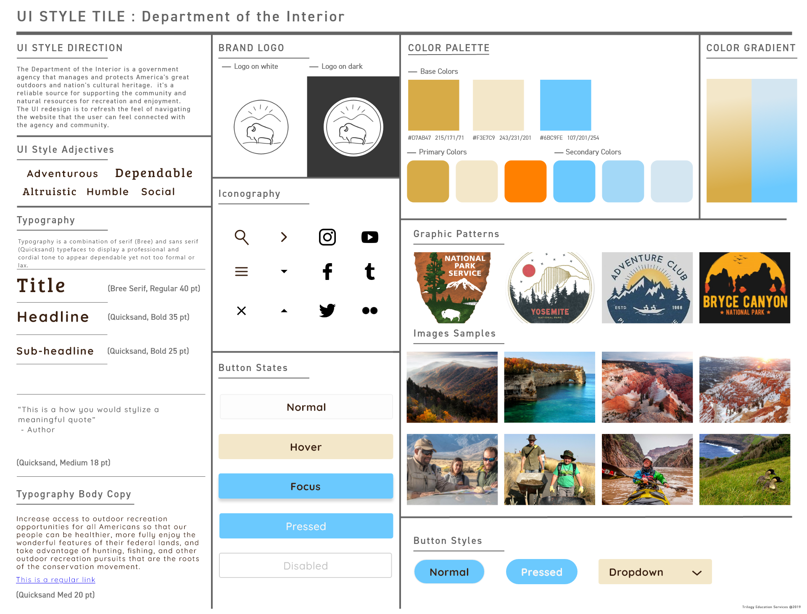

PORTFOLIO

CASE STUDY: Redesigning the Department of the Interior webpage
My role: UX/UI Designer (Individual Project)
Tools used: XD, InVision
THE GOAL
The goal was to redesign a responsive website of the Department of the Interior (DOI) that addresses pain points of users of the website and improves navigation of the website that allows users to access information more efficiently. The ideal result of the redesign is that users will have a better experience with the website that users can trust and rely on, leading to increased website retention rates for return visitors.
THE PROBLEM
Visitors to a government website often have a confusing experience in navigating the interface to understand the purpose of the agency and find pertinent information for their needs.
For the redesign of the DOI website, research was conducted to determine what kind of info that the user would like to know about DOI and how the user would navigate the website to look for resources and opportunities such as employment. Participants of the research consisted of various ages who may be interested in discovering the nation’s natural resources and cultural heritage and looking to get involved with the agency. From research, a proto persona was developed that identified the users that come to the DOI website. Meet Peter Gregory:
DESIGN ANALYSIS
Usability testing was conducted with 6 participants to observe how the user flow for the existing website. A heuristic analysis and annotation of the existing website was then conducted based on observations from the tests.

Features to improve were then prioritized in consideration for the redesign of the website. The process also included sorting the architect information of the website that better served the navigation flow for the user.


PROTOTYPING
Wireframes were then developed based on the user flow for accessing information about the agency and finding opportunities for employment that would work for the proto persona, Peter Gregory. A style tile was developed to construct the high-fidelity redesign of the website.
Low-fidelity wireframes

High-fidelity wireframes

KEY LEARNINGS AND TAKEAWAYS
Guerilla and usability testings of the prototypes called on lots of iteration of the website while keeping in mind the brand voice for the redesign.
Hero image had to be enhanced based on user feedback that helps catch their attention and highlights the message of the agency and call-to-action.
In the process of iterating, I had to ensure a seamless responsive design across devices.
I had a lot of learning with this project, and there's much opportunity for the design to progress into a more user-friendly interface.
Huntington Beach, CA
elainejac@gmail.com
@2020 Elaine Jacinto